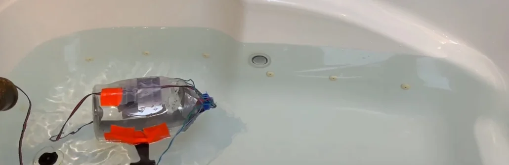
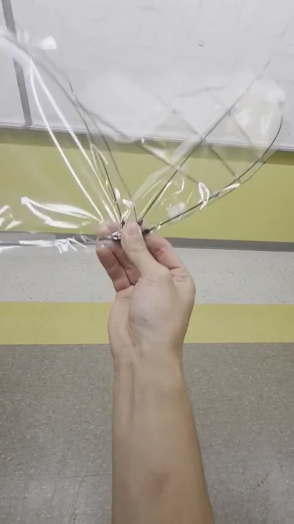
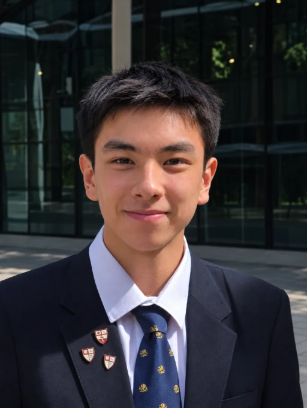

Sensors & embedded systems
Allergen Detector Prototype
An Arduino gas-sensor prototype that explored allergen detection by testing whether it could tell food samples apart.
Electrical Engineering Co-op · University of Waterloo
Watch live project demos on YouTube
Sensors & embedded systems
An Arduino gas-sensor prototype that explored allergen detection by testing whether it could tell food samples apart.

Web development & entrepreneurship
A website and intake system for a youth-run home maintenance service.

Hardware & fabrication
A two-player cabinet I laser-cut, wired, and configured for school events.


Motor control & mechanical design
Independent motor control, a 3D-printed hull, and a bathtub test.

Home automation
An Arduino prototype that senses activity and mechanically toggles a switch.

Embedded systems & mechanical design
A remotely controlled flapping-wing prototype with a 3D-printed frame and lightweight carbon-fiber wings.
More to come...
I’m Jeffrey, an electrical engineering co-op student at the University of Waterloo. I like learning new things by picking a project and figuring out what I need to know along the way.
I learned how to build a printed circuit board (PCB) while working with my team on a fall detector. Building a two-player arcade cabinet taught me how to wire buttons and joysticks and fit the electronics into a laser-cut enclosure.
Co-founding FixIt Homecare taught me how to turn a job request into something a team could act on. I built the website and managed online intake, then helped coordinate crews and equipment for home maintenance jobs.
My goal is to help as many people as I can with the things I build. I want what I learn on each project to help me make the next one more useful to the people it’s meant for.

Jeffrey Lee
Electrical Engineering Student · University of Waterloo